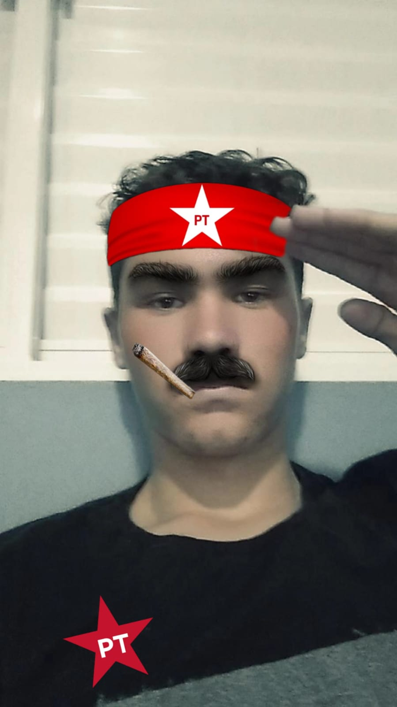
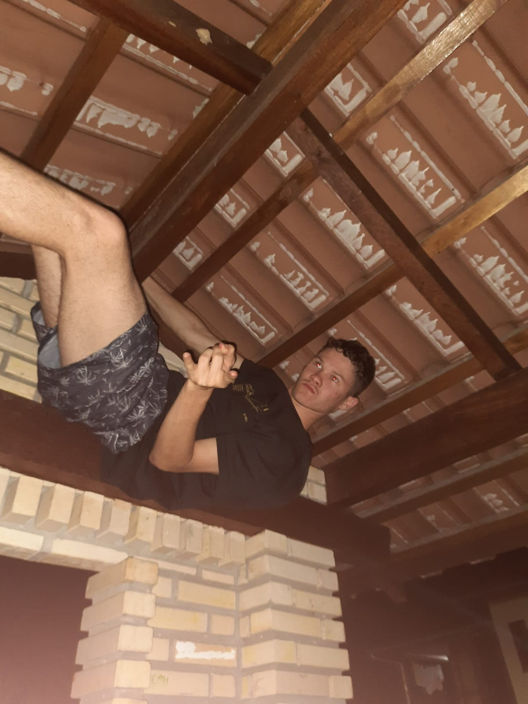
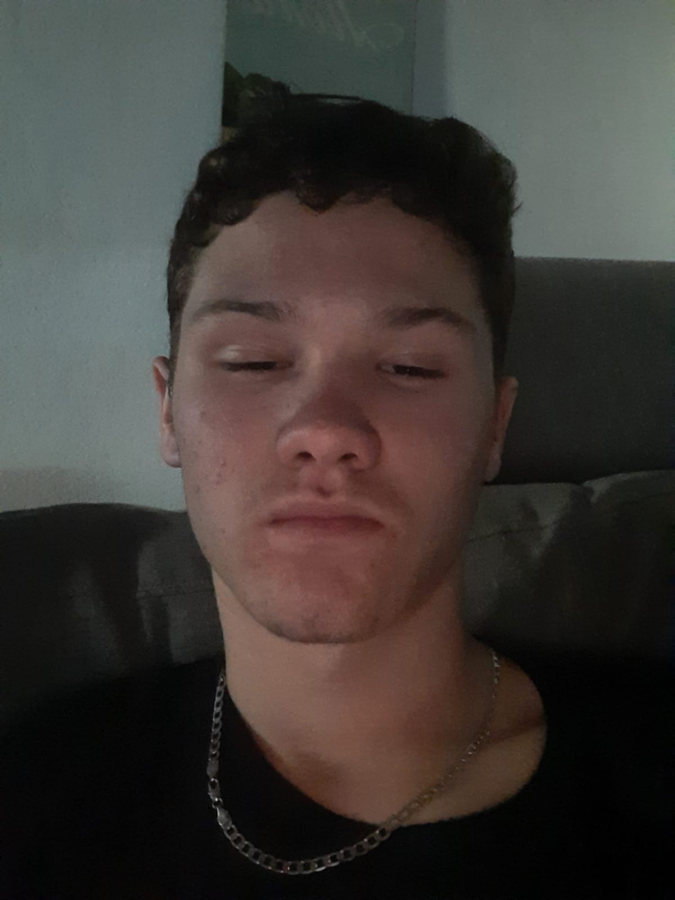
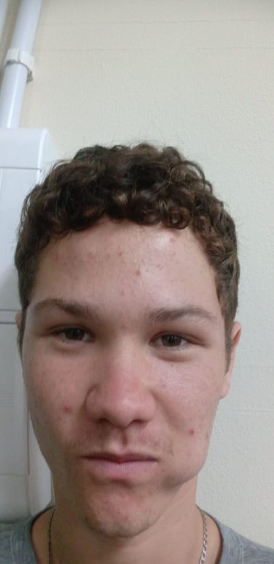

Carlos Henrique de Souza Ribeiro

Quem eu sou?
Jalambipal( oi em coreano), sou descendete de
asiatico me chamo Carlos tenho 17 anos de pura safadeza. Gosto de fofocas sou o edio antonio infantil, trabalho
colocando cortina inclusive a maior que coloquei foi a para tampar a testa do danilo. Já fui favelado e me
escondi deles no teto do barraco, mas me pegaram e tive de raspar o cabelo e sou fã do Stalin viva o comunismo.
Ja fiz taekondow igual meus descendentes e fui faixa azul
ponta vermelho, ja tive cabelo grandão e sou afiliado com o PT meu primo é o dianho e gosto de fazer uma
fundurcinha.



Meus problemas pessoais🙁
1.sou asiatico e enxergo pouco
2.disturbio de raiva
3.caxumba na boca

